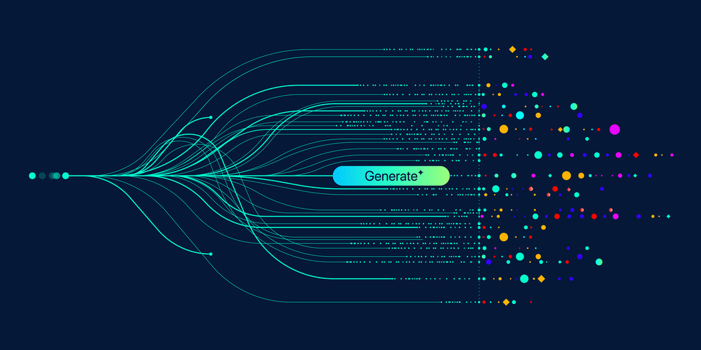

Book Reflection #4

In the chapter “AI as a Creative,” Mollick talks about the AUT (Alternative Uses Test), comparing a human’s performance to an AI. The AUT, for context, is a measure of divergent thinking, which is one component of creativity. It was originally developed by J.P. Guilford (1967) as part of his work on the Structure of Intellect model of human intelligence. In this test, participants are given a common object (e.g., a brick, paperclip, shoe, or newspaper) and asked to come up with as many alternative uses for it as possible – usually within a fixed time limit (for example, 2–3 minutes per object).
Mollick brought up the AUT to demonstrate that LLMs significantly outperform us humans on the timed version of this test. He used a toothbrush as an example, and the LLM was able to generate 122 “alternative uses” in two minutes – far more than a human would be able to.

I wanted to test this out for myself, but not through the timed version of the test (since it would be difficult to standardize what “time” means for an LLM).
In my version of the experiment, I was still up against an LLM, but instead of quantity, our alternative uses would be judged on creativity.
First, I generated a list of 10 alternative uses for a toothbrush. I didn’t aim to make them as outlandish or creative as possible – I simply listed the first 10 ideas that came into mind when told to “come up with 10 uses for a toothbrush that don’t involve brushing teeth.”
My 10 ideas are as follows: 1. Use the end of the toothbrush to pole holes in dirt, which you can plant seeds in. 2. Use the bristles as a textured paintbrush. 3. Use the bristles to clean shoes. 4. Use the bristles to brush a pet’s hair. 5. Use the toothbrush as a bookmark when reading. 6. Use the end of the toothbrush as a drum stick to make music. 7. Glue the toothbrush to the end of a short pencil to make it longer. 8. Use two toothbrushes as chopsticks. 9. Use the bristles to exfoliate your skin. 10. Use a bunch of toothbrushes to play Jenga.
I definitely felt myself slowing down after the 6th idea, and it took quite a bit of time to think of all 10.

Then, I prompted three LLMs (ChatGPT, Claude, Gemini) with the follwing prompt: > Come up with 10 uses for a toothbrush that don’t involve brushing teeth.
ChatGPT 5’s Response
Here are 10 alternative uses for a toothbrush that don’t involve brushing teeth:
- Cleaning jewelry – the small bristles can gently scrub dirt and grime from rings, necklaces, and watch links.
- Detailing shoes – perfect for cleaning hard-to-reach spots in sneaker soles or seams.
- Scrubbing grout – the narrow head fits perfectly between tiles to remove buildup.
- Cleaning keyboards – loosen crumbs and dust between keys.
- Eyebrow grooming – use a clean toothbrush to shape or exfoliate eyebrows.
- Hair dye application – apply dye to small sections or roots precisely.
- Cleaning bike chains or gears – scrub grease from tight spots without damaging parts.
- Cleaning kitchen tools – reach crevices in blenders, graters, and bottle caps.
- Removing lint or fuzz – brush sweaters or fabric seams to lift lint.
- Arts and crafts – create splatter paint textures or clean small parts of a model.
Would you like me to focus on creative, practical, or scientific/experimental uses next?
Claude Sonnet 4.5’s Response
Here are 10 creative alternative uses for a toothbrush:
Cleaning grout - The small bristles are perfect for scrubbing tile grout lines in bathrooms and kitchens.
Removing stains from clothing - Gently scrub stubborn spots on fabric before washing, especially around collars and cuffs.
Cleaning jewelry - Use with soapy water to clean intricate details on rings, necklaces, and other pieces.
Keyboard cleaning - Brush away dust and crumbs from between computer keys.
Detailing your car - Get into small crevices around air vents, buttons, and seams in your vehicle’s interior.
Cleaning shoes - Scrub dirt from sneaker soles and hard-to-reach areas around eyelets and seams.
Applying hair dye - Use for precise application along the hairline or for touch-ups on roots.
Gardening tool - Gently clean delicate plant leaves or apply pesticides to specific spots.
Arts and crafts - Create splatter paint effects or textured brush strokes in artwork.
Cleaning around faucets - Scrub away mineral deposits and grime around the base of taps and in tight spaces around fixtures.
Gemini 2.5 Flash’s Response
That’s a fun challenge! A toothbrush’s small size, tough bristles, and easy grip make it surprisingly useful for other tasks.
Here are 10 uses for a toothbrush that don’t involve brushing teeth:
🛠️ Household & Cleaning Uses
- Grout Cleaner: Its small head and stiff bristles are perfect for scrubbing mold and dirt out of the narrow lines between bathroom and kitchen tiles.
- Keyboard Cleaner: Use it to sweep dust, crumbs, and debris from in between the keys on a computer keyboard.
- Appliance Crevice Scrubber: Great for reaching and scrubbing tight spots in kitchen appliances, like the lip around a blender base or the vents of a toaster.
- Jewelry Cleaner: Use a soft-bristled brush and a gentle cleaning solution (like mild soap and water) to carefully scrub dirt and grime from rings, necklaces, and watch bands.
🎨 Personal Care & Beauty Uses
- Eyebrow Tamer/Shaper: Use a clean, dry toothbrush to comb and shape unruly eyebrows, keeping them neat and in place.
- Hairline/Root Touch-up: An old toothbrush is excellent for applying a small amount of root-cover-up powder or temporary hair dye to small sections of the hairline.
- Exfoliating Lip Scrubber: Gently scrub your lips with a soft toothbrush and a little bit of lip balm or petroleum jelly to remove dead skin.
⚙️ Hobby & Other Uses
- Shoe Scrubber: Ideal for cleaning the rubber sole edges, stitching, and hard-to-reach fabric textures of sneakers and other shoes.
- Detail/Art Tool: Use a toothbrush to flick or splatter paint onto a canvas for a specific artistic effect, or to apply glue to tiny parts of a model or craft project.
- Battery Terminal Cleaner: Use an old, dry toothbrush to scrub corrosion (the white/blue powder) off the terminals inside battery compartments of electronics. (Ensure the item is powered off and use caution!)
Would you like me to come up with 10 more uses, or perhaps focus on uses for a specific area, like cleaning or art projects?

After having the LLMs generate a list of ideas, I wanted to test whose was more creative – mine (list A), ChatGPT’s (list B), Claude’s (list C), or Gemini’s (list D). To do this, I prompted ChatGPT 5: > Given these 5 lists of alternative uses for a toothbrush, rank them in order of most to least creative. Give a brief justification for your ranking.
This was the response:
Here’s a creativity ranking of the five lists (A–D), from most to least creative, with concise reasoning for each:
🥇 1. List A — Most Creative
Why: This list shows strong conceptual flexibility—it reimagines the toothbrush far beyond cleaning functions. Examples like using toothbrushes as chopsticks, a bookmark, or for Jenga demonstrate divergent thinking that departs from the toothbrush’s typical category (cleaning/personal care). Even the “drum stick” and “seed hole poker” ideas show cross-domain creativity (art, gardening, music). A few are impractical, but that’s expected in highly creative responses.
Creativity Traits: Originality ✅ Flexibility ✅ Practicality ❌ (lower) Overall Impression: Inventive and playful reinterpretation of object function.
🥈 2. List D
Why: List D introduces structured categories (household, beauty, hobby), which shows organization but also breadth. Ideas like battery terminal cleaner and paint splatter tool are inventive within plausible domains. It doesn’t push boundaries as far as List A, but it demonstrates adaptiveness—finding multiple real-world contexts where a toothbrush fits.
Creativity Traits: Originality ⚪ Flexibility ✅ Practicality ✅ Overall Impression: Versatile and balanced—less surprising than A, but broader than B/C.
🥉 3. List C
Why: List C has solid variety and a few less typical uses (like cleaning plant leaves or applying pesticide), but most are standard cleaning or beauty-related functions. It’s somewhat more imaginative than List B because it includes minor domain shifts (gardening, art), though it still stays largely realistic.
Creativity Traits: Originality ⚪ Flexibility ⚪ Practicality ✅ Overall Impression: Practical with mild creativity—incremental innovation.
4️⃣ List B
Why: This list is filled with realistic, common-life hacks—useful but not novel. Nearly all revolve around cleaning or grooming (grout, jewelry, keyboards, lint). These are well-known secondary uses and would likely occur to many participants in an Alternative Uses Test.
Creativity Traits: Originality ❌ Flexibility ⚪ Practicality ✅✅ Overall Impression: Functional but conventional.
5️⃣ List E (if there were one, but only A–D were given, so ignoring this placeholder)
✅ Final Ranking:
- A — Highly original, broad repurposing
- D — Broad but realistic category expansion
- C — Practical with slight novelty
- B — Conventional and utilitarian
Would you like me to quantify this (e.g., with Torrance-style scores for fluency, flexibility, originality, and elaboration)?
Results
It ultimately ranked my list as the most creative (across three different iterations), which was really surprising! However, looking back on ChatGPT’s justification for why it ranked mine as the most creative, I think this was because my prompt to the LLMs mentioned nothing about creativity – whereas I had creativity in the back of my mind (since this was what I knew I wanted to test), the LLM prompts simply requested “alternative uses.” If I had prompted the LLMs to brainstorm creative uses instead, I’m almost sure that they would have performed better than me.
In the future, I would re-try this AUT but with more accurate and refined prompting to give the LLMs a more “fair” shot. I think there may be other interesting dimensions of the AUT to test as well – Mollick tested time/quantity, I tested quality/creativity, and I’m wondering if there are more that I could experiment with!